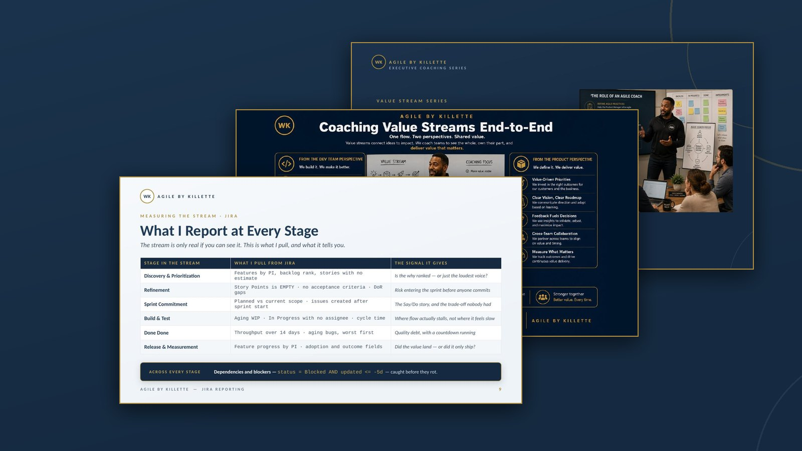
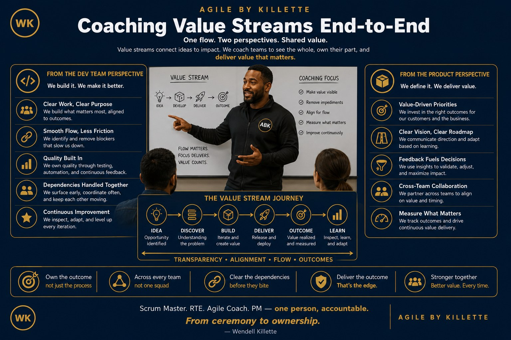

A value stream is everything that happens — from the first idea to the moment the customer feels the impact. It is not a sprint. It is not a release. It is the full journey of value, and both Dev and Product own it together.

Value looks like working software — but it runs deeper than code.
The Dev stream is healthy when every step has an owner — and no step is skipped to hit a date.
Value looks like customer outcomes — but it starts with honest prioritization.
The loop is the point. Measurement feeds the next discovery — a stream that does not feed learning back is a pipeline, not a stream.
The stream is only real if you can see it. Every stage has a question, and every question has a query. This is what I pull from Jira and what it actually tells you.
| Stage in the stream | What I pull from Jira | The signal it gives |
|---|---|---|
| Discovery & Prioritization | Features by PI · backlog rank · stories with no estimate | Is the why ranked — or just the loudest voice? |
| Refinement | "Story Points" is EMPTY · no acceptance criteria · DoR gaps | Risk entering the sprint before anyone commits |
| Sprint Commitment | sprint in openSprints() AND created >= -5d | The Say/Do story, and the trade-off nobody had |
| Build & Test | status = "In Progress" AND updated <= -3d | Where flow actually stalls, not where it feels slow |
| Done Done | status changed to Done during (-14d, now()) · aging bugs | Throughput, and quality debt with a countdown |
| Release & Measurement | type = Feature AND "Program Increment" = "PI-2026.3" | Did the value land — or did it only ship? |
status = Blocked AND updated <= -5d — caught before they rot. The full query library lives in the AI + Jira Playbook, and the coaching behind it in Managing the Dependencies.AI does the heavy lifting on top: it writes the JQL from a plain-English question, computes cycle time, flags WIP over the limit, names the likely carryover, and triages the whole thing into a Green / Yellow / Red view with a one-line why. One rule I never break: in regulated environments, client data never goes into public AI tools. Enterprise Copilot, proper governance, access controls — the speed of AI without the audit risk.
Most delivery failures happen at the seam between Product and Dev — not inside either team. Four failure modes show up again and again:
I deliver this as a working session with Dev and Product in the same room — then wire the Jira reporting so the stream stays visible after I leave.
Book a conversation →